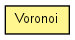

toxi.geom.mesh2d
Class Voronoi
java.lang.Object
 toxi.geom.mesh2d.Voronoi
toxi.geom.mesh2d.Voronoi
public class Voronoi
- extends java.lang.Object

| Methods inherited from class java.lang.Object |
equals, getClass, hashCode, notify, notifyAll, toString, wait, wait, wait |
DEFAULT_SIZE
public static float DEFAULT_SIZE
Voronoi
public Voronoi()
Voronoi
public Voronoi(float size)
addPoint
public void addPoint(Vec2D p)
addPoints
public void addPoints(java.util.List<Vec2D> points)
getRegions
public java.util.List<Polygon2D> getRegions()
getSites
public java.util.List<Vec2D> getSites()
getTriangles
public java.util.List<Triangle2D> getTriangles()